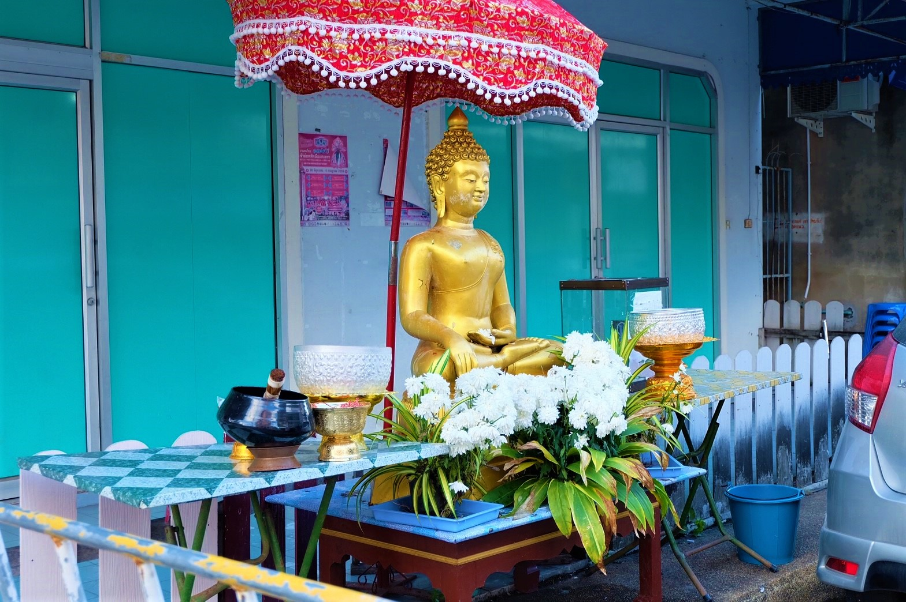
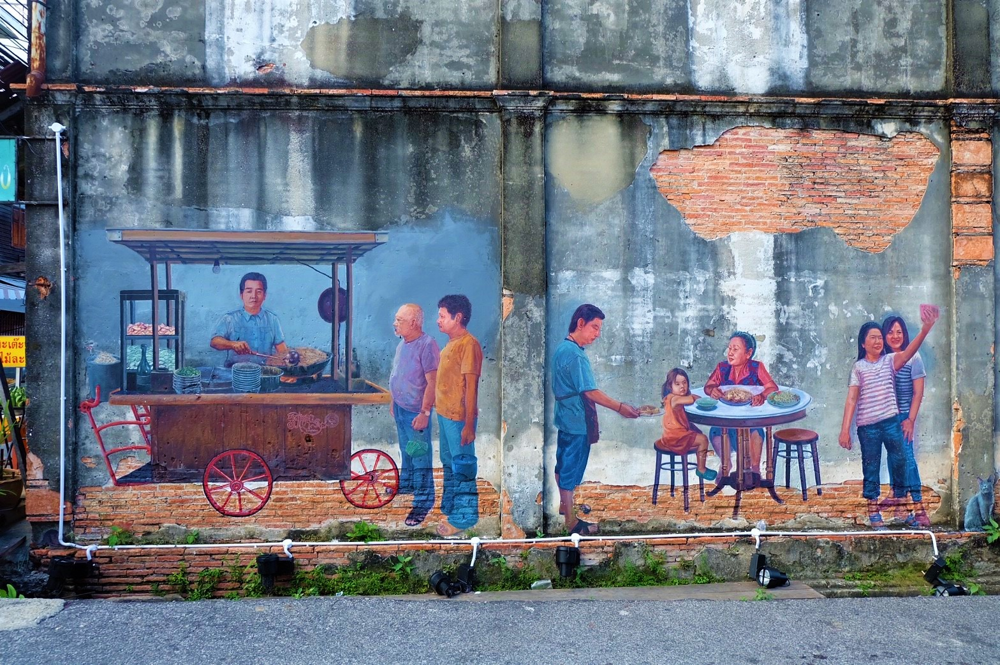
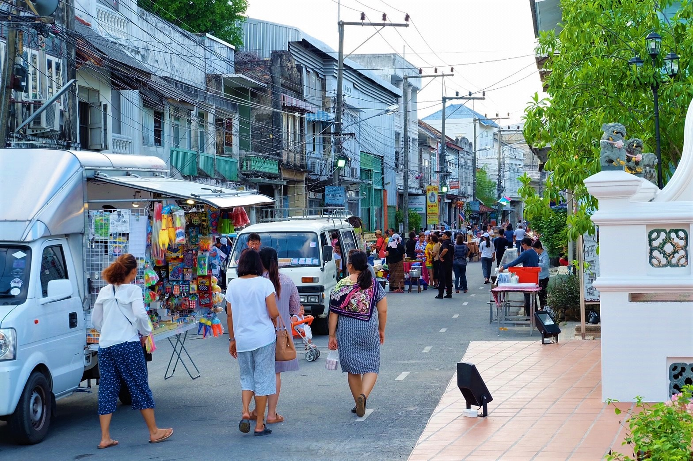
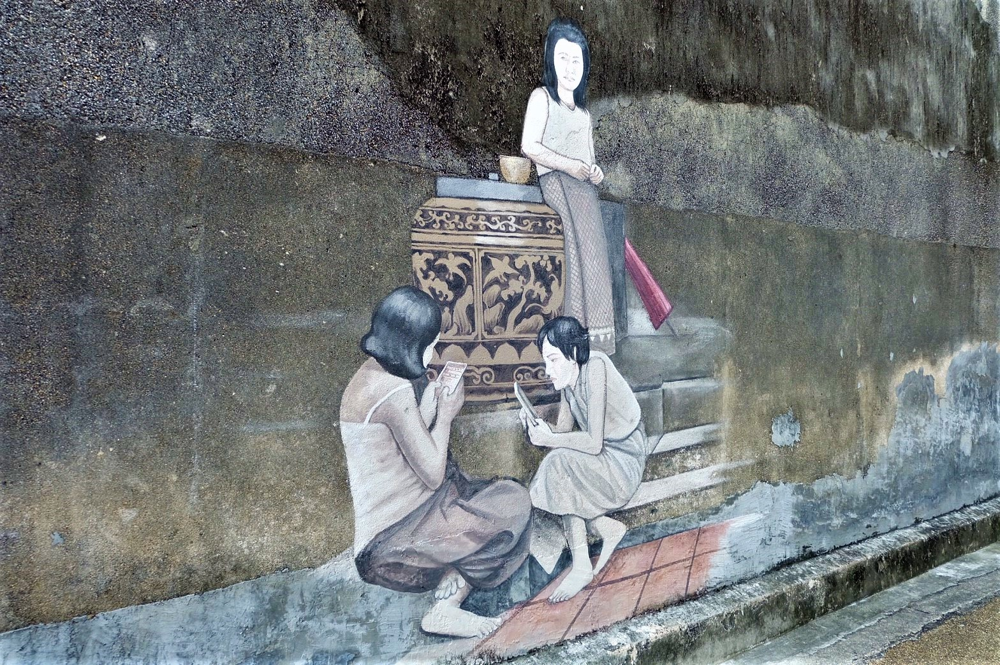
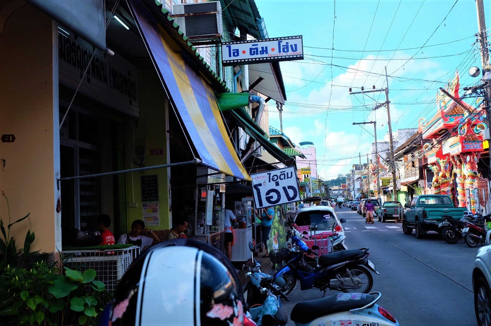
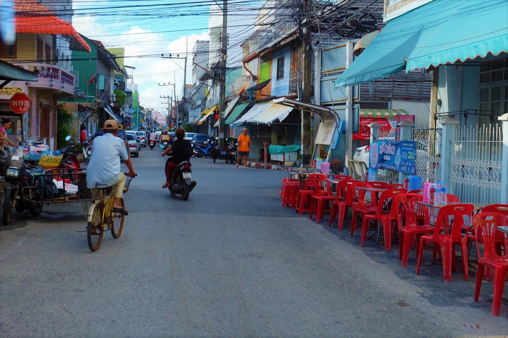

ถนนนางงาม
ประวัติความเป็นมา
ถนนนางงามเป็นถนนสายเก่าแก่ของ จ.สงขลา มีประวัติยาวนานกว่าร้อยปี แต่เดิมเรียกว่า “ถนนเก้าห้อง” เนื่องจากเริ่มแรกมีอาคารบนถนนสายนี้เพียง 9 คูหา หรือ 9 ห้อง และในปี พ.ศ.2478 จังหวัดสงขลา ได้จัดงานปีใหม่พร้อมกับจัดประกวดนางงามสงขลาขึ้น นางงามที่ชนะและได้เป็น “นางงามสงขลาคนแรก” นั้นก็อาศัยอยู่ ณ “ถนนเก้าห้อง” นับแต่นั้นมาคนสงขลาจึงเรียกถนนเส้นนี้ว่า “ถนนนางงาม” อาคารบ้านเรือนบนสองฝากฝั่งถนนสายนี้ส่วนใหญ่เป็นจะห้องแถวไม้อายุนับร้อยกว่าปีสุดคลาสสิค เป็นการผสมผสานกันระหว่างสถาปัตยกรรมจีนฮกเกี้ยนและชิโนโปรตุกีส (อารมณ์คล้ายๆกับย่านเมืองเก่าจ.ภูเก็ต) นอกจากบ้านเรือนที่สวยงามที่ควรค่าแก่การมาเดินชมแล้ว อีกหนึ่งไฮไลท์ที่ขึ้นชื่อก็คือ ร้านอาหาร ที่มีให้เลือกชิมมากมายกว่า 30 ร้าน หลายๆร้านเป็นร้านเก่าแก่อายุใกล้ 100 ปี มีให้เลือกชิมทั้งของคาวและของหวาน
ที่มา : http://blog.reviewthailand.net/ชิมร้านอร่อย-ถนนนางงาม-สงขลา
ความประทับใจ
ข้อมูลสถานที่
ที่ตั้ง
นางงาม ตำบล บ่อยาง อำเภอเมืองสงขลา สงขลา 90000
วันและเวลาทำการ
เปิดทุกวัน
24 hours
ค่าเข้าชม
ไม่เก็บค่าบริการ
การเดินทาง
เมื่อขับรถมาจากหาดใหญ่ก็ให้ขับตรงมาเรื่อยๆ ถนนนางงามจะต้องเลี้ยวเข้ามาในซอยที่ต้องข้ามกับวิทยาลัยอาชีวะ สงขลา ข้างร้านก๋วยเตี๋ยวเรือ แล้วขับมาเรื่อยๆก็จะเห็นป้ายถนนนางงาม หรือหากไปไม่ถูกก็ถามคนแถวนั้น เพราะคนสงขลาใจดีมากมาก


แผนที่
ภาพบรรยากาศ
     